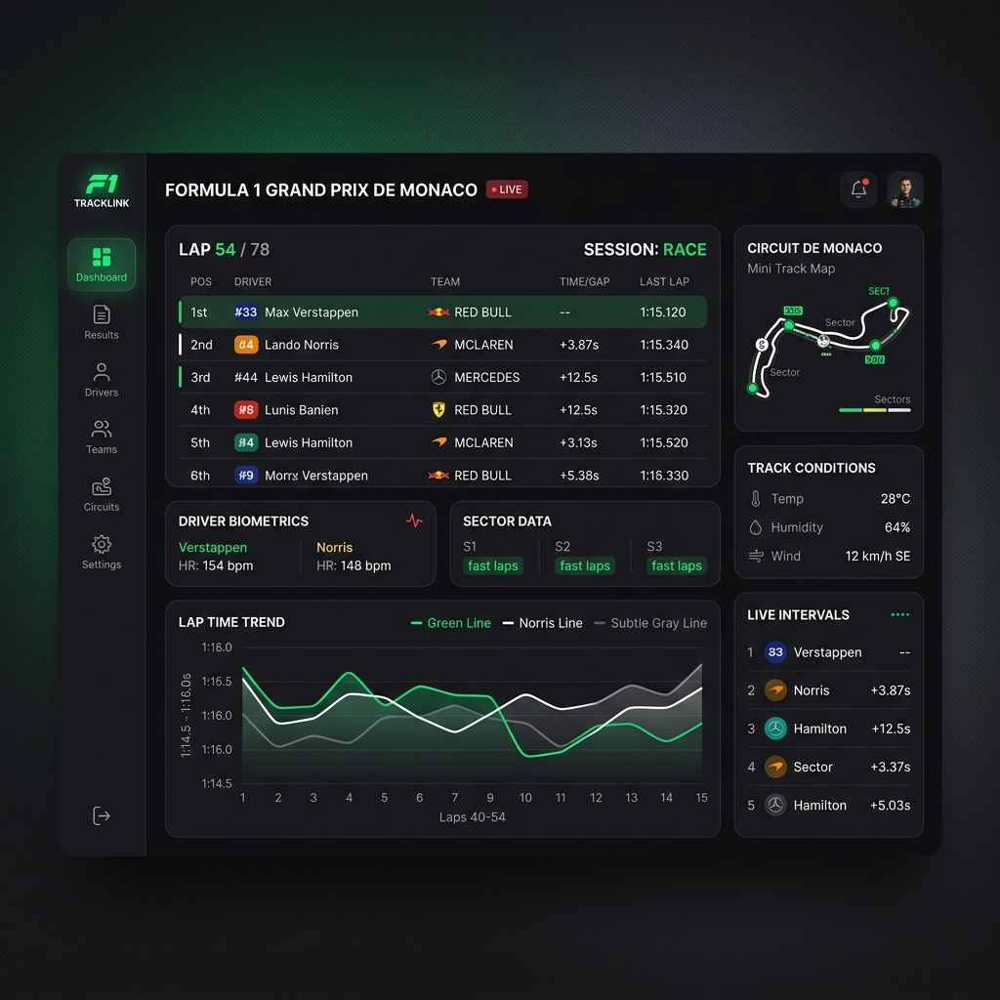

Racoon
Computer Engineering Student
I build things, break things, and learn how they work.
About Me
Computer engineering student who enjoys turning ideas into real products. I like exploring new technologies, building experimental projects, and understanding how things work under the hood.
From mobile applications and web projects to APIs and game development, I enjoy learning by building.
Based in
Türkiye
Focus
Software Development
Currently
Building & Learning
Things I've Built
A collection of projects I'm proud of. Each project is a piece of my journey.
Pacevion
A modern Formula 1 data platform for exploring race weekends, standings, drivers and racing insights.

Tech Stack
Languages
Frontend
Backend & APIs
Tools
Currently Building
Lixor
Building a polished productivity experience.
Eclipsia
Developing a cozy mobile game with Flame.
Backend & Architecture
Exploring backend systems, APIs and modern application architecture.
My Journey
Started Programming
Began exploring programming and software development.
First Projects
Started turning ideas into small applications and experiments.
Web Development
Built websites and explored modern frontend development.
Application Development
Moved into mobile applications and Flutter.
Game Development
Started experimenting with game development using Flame.
Building in Public
Continuing to create, experiment and learn through real projects.
Explore My Work
Open Source & Experiments
Most of my experiments, projects and learning happen through code. Explore what I'm building on GitHub.
Visit GitHub